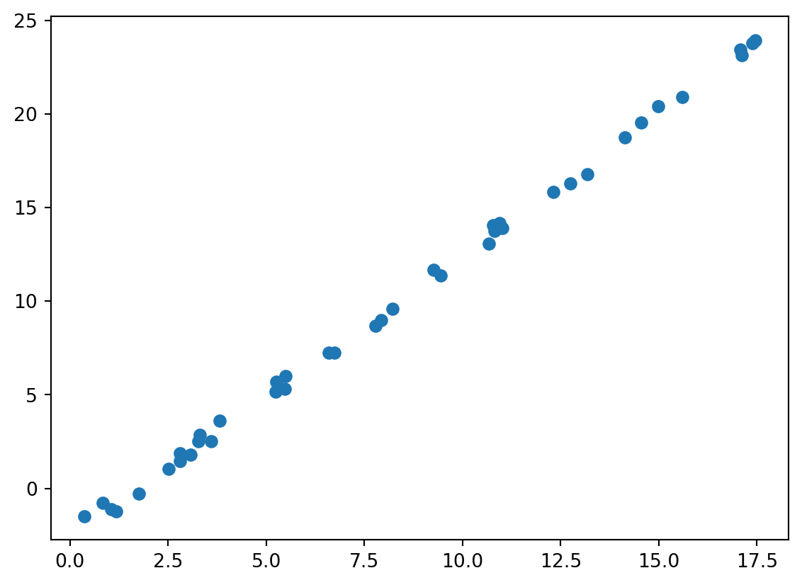
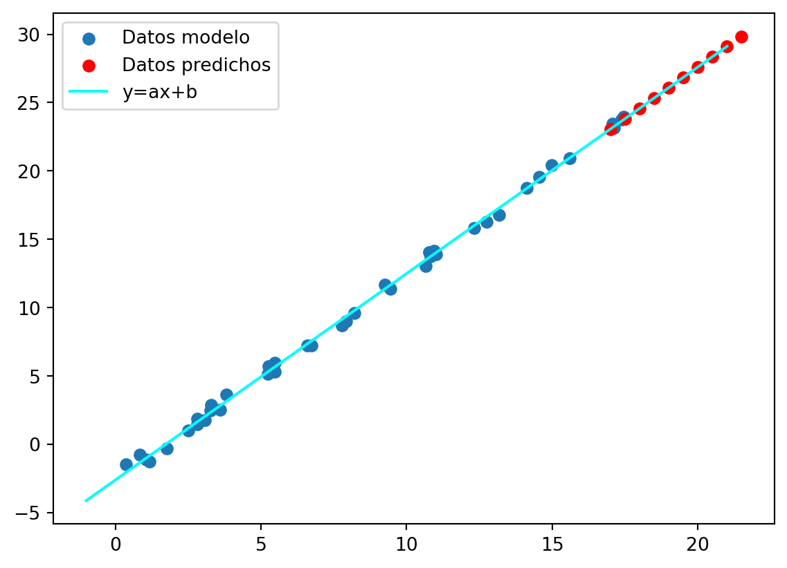

import numpy as np
import matplotlib.pyplot as plt
from sklearn.linear_model import LinearRegressionEn este post presentamos un ejemplo básico de regresión lineal simple, es decir, el caso de ajustar una línea a datos \(x,y\).
Antes que nada importamos las librerias necesarias
Primeramente generamos unos puntos para \(x\) y para \(y\)
rng=np.random.RandomState(42)
x=18*rng.rand(40)
y=1.5*x-3+rng.rand(40)
plt.scatter(x,y)
plt.show()
Ahora definimos los hiperparámetros de nuestro modelo
Lineal=LinearRegression(fit_intercept=True) # La regresión lineal es de la forma y=ax+b, donde b!=0Definimos la variable \(X\)
X=x[:,np.newaxis]
X.shape(40, 1)Nota: en este caso como estamos trabajando con datos simulados no es necesario definir \(y\) puesto que sklearn si nos permite ingresar ese array
Ahor ajustamos el modelo
Lineal.fit(X,y)LinearRegression()In a Jupyter environment, please rerun this cell to show the HTML representation or trust the notebook.
On GitHub, the HTML representation is unable to render, please try loading this page with nbviewer.org.
LinearRegression()
Observemos el valor del coeficiente (\(a\))
Lineal.coef_array([1.50922213])Observemos el valor del intercepto (\(b\))
Lineal.intercept_-2.60022468062337Probemos el poder predictivo de nuestro modelo
xfit=np.arange(17,22,0.5)
Xfit=xfit[:,np.newaxis]
yfit=Lineal.predict(Xfit)Ahora realizemos una visualización
def f(x):
return 1.51*x-2.6
plt.scatter(x,y)
plt.scatter(xfit,yfit,color='red')
plt.plot(range(-1,22),[f(i) for i in range(-1,22)],color='cyan')
plt.legend(['Datos modelo','Datos predichos','y=ax+b'])
plt.show()